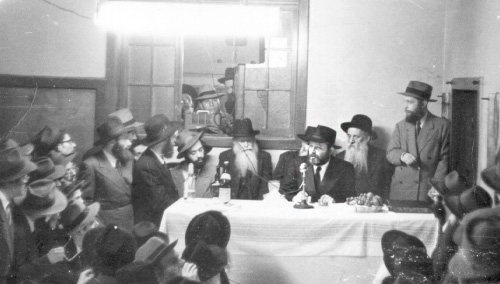

Basi L’gani 5713
Beis Moshiach presents the maamer the Rebbe MH”M delivered on Yud Shvat 5713, in accordance with the custom established by the Rebbe to review each year a section of the Rebbe Rayatz’s maamer “Basi L’Gani” of 5710. • This year we focus on the third section of the profound and foundational chassidic discourse.
Translated by Boruch Merkur

SHTUS D’K’DUSHA COUNTERS OUTRIGHT FOLLY
1. “I have returned to My garden, My sister, My bride.” On these words the Midrash (in its place) comments, “‘to My garden’ – to My bridal chamber, to the place where G-d’s essence was [revealed] in the first days of Creation.” For the essence of the Sh’china, the Divine Presence, was manifested in the lower realms. The sin of the Tree of Knowledge, however, as well as the sins that followed it, caused the Sh’china to depart, ascending from the lower realms upward, until It reached the seventh Firmament. Then the righteous, the tzaddikim […] drew the Divine presence back down […] until it literally reached the physicality of the earth […] as it was in the first days of Creation. […] This effect is brought about through the Divine service of iskafia d’sitra achra, shunning evil.
The [main] service that is performed in the Mikdash, the Holy Temple, is the service of offering sacrifices […] which is why the Mishkan was made specifically of atzei shittim, wood from Acacia trees. [That is, it shall be illustrated how the word “shittim” alludes to the Divine service of shunning evil – or more specifically, the spirit of folly that permits and precedes evil behavior – going so far as to transform this folly into something holy, shtus d’k’dusha.] “Shittim” comes from the root word, “shita,” which means “(being) inclined (in a certain direction).” The etymologically related word, “shtus – foolishness,” shares the same meaning [i.e., an inclination towards foolishness]. That is to say that there is something that is described as the middle path. The inclination to either side, above or below, is called “shita – a deviation, an inclination away (from the middle path).” An upward inclination [is also called “shtus”] “shtus d’k’dusha – a deviation towards holiness,” whereas a downward deviation is called “shtus d’l’umas zeh – an inclination towards depravity, evil.”
In general, the path of Torah and Mitzvos is the middle path, as Rambam writes in Hilchos Middos, the Laws of Proper Character. The inclination towards that which is above the middle path, however, is shtus d’k’dusha. [Although the middle path is typically sought, the path of] shtus d’k’dusha is necessary, particularly when extra caution is required to avoid shtus d’l’umas zeh, outright folly. In that case, it is specifically shtus d’k’dusha that is the means to attain the necessary caution.
This teaching is expressed by the saying, “Ahanei lei shtusei l’sava – the elder [sage, Rebbi Yehuda bar Rebbi Ila’i] benefitted by employing shtus [to fulfill the Mitzva of bringing joy to the bride at her wedding].” Shtus d’k’dusha provides “benefit” and corrects shtus d’l’umas zeh, as is stated with regard to the Future Era of Redemption, “V’hishka es Nachal HaShittim – and He shall water the valley of Shittim,” for by means of shtus d’k’dusha, “the glory of the Alm-ghty is exalted in all the worlds.”
HOW COULD A SOUL SIN?!
2. Shtus d’k’dusha is needed to counter shtus d’l’umas zeh, outright folly. Indeed, it is by means of this confrontation that “the glory of the Alm-ghty is exalted in all the worlds.”
An analysis of the verse, “ki sisteh ishto – were his wife to go astray,” sheds light on the general concept of shtus d’l’umas zeh. Rashi comments on this verse: “she strayed from the pathways of modesty.” Another verse states, “And the Jewish people settled in Shittim.” The Midrash says about the latter verse that Shittim is a place that causes shtus to ensue, it brings about folly, engendering the sin of licentiousness. Similarly our Sages say on the verse, “ki sisteh ishto” – “a man would not sin were it not for a ruach shtus, a spirit of folly, entering him.”
The reason for this [suggestion that sin is unnatural to the person, that he must first be possessed by a foreign spirit in order for him to transgress] is that it is not possible for a Jew, on his own accord, to commit any transgression. Thus, the Zohar (Zohar III 16a; see also 13b) comments on the verse, “nefesh ki sechta – a soul that sins” – upon considering this condition, the Torah and the Alm-ghty are confounded and ask, “[How could there possibly be] a nefesh, a soul, that sins?!”
That is, this astonishment is expressed even with regard to the level of the soul called nefesh, which does not signify the essence of the neshama, the essence of the soul. In fact, of the five names of the soul, “nefesh” refers to its lowest dimension. The Zohar goes on to specify that the concept of sin is associated only with the nefesh, whereas the level of neshama, or even the level of ruach, has no connection with the concept of sin. Nevertheless, even if there is sin at the level of nefesh, it is said that this is “confounding.” Moreover, even if the transgression is strictly inadvertent – indeed, the verse speaks about a sin committed b’shogeg, inadvertently – this too can only be on account of the spirit of shtus that enters the person. For of his own accord, the nature of every Jew is that he does not want – nor can he be – separated from G-dliness.
The spirit of shtus, however, covers over the truth and makes it appear to the person that even when he transgresses, his Judaism remains intact. On this basis, [having been possessed, as it were, by a ruach shtus, a spirit of folly] it is possible for a Jew to transgress. But when the truth shines within him, the aspect of “v’emes Havaya l’olam – the truth of G-d is eternal,” then he perceives that the result of a transgression – even a Rabbinical transgression, or a minor inference of the Sages – causes him to be totally separated from G-dliness, more so than klipos and sitra achra.
The latter is expressed by the Alter Rebbe in Tanya (see Ch. 24, 25; Kuntres U’Mayan, 2nd maamer ff.): When a person transgresses G-d’s will, he is more debased and lesser than impure animals, etc., which do not change their “mission” [i.e., their vicious nature]. Although the animal does not see [i.e., it is not consciously aware of G-d’s will], its mazal sees [i.e., its spirit sees, compelling the animal to act in line with G-d’s will]. Thus, these animals do not harass the [G-d-fearing] person upon whom the image of the L-rd does not leave his face. Indeed, G-d has imparted to these animals a hostile spirit. However, it is stated, “The fear of you and the dread of you shall be upon all the beasts, etc.” It is only on account of the fact that the “in our image and our likeness” is not seen upon the person, that animals harass him, etc. Similarly, the gentile nations, the klipos, and sitra achra do not transgress G-d’s will. There deficiency is expressed, rather, in the fact that “they call Him ‘G-d of gods,’” attributing to themselves as well, authority and dominion. Nevertheless, they do not rebel against G-d outright; “they [show Him deference and] call Him ‘G-d of gods’” and they never transgress His will. Thus, the person who commits a sin, rebelling again G-d’s will, is more despicable than the klipos and sitra achra, as well as the things that spawn from them, namely, impure animals and wild beasts. The transgressor is, therefore, told that “even a gnat” – which consumes but does not excrete – “preceded you [in Creation].”
WORSE THAN IDOLATERS?!
3. Now, we say that a person who commits a sin is more separate from G-d than klipos and sitra achra, inasmuch as they do not transgress the will of the King; rather [they recognize His supremacy and] “they call Him ‘G-d of gods.’” But at first glance, it is difficult to understand how the sinner is considered more separate from G-d than these forces of evil, for it is idolatrous to call the Alm-ghty “G-d of gods,” attributing divinity to the stars and constellations or to the angels ministering On High. Certainly the evil forces’ use of this appellation in reference to G-d constitutes a transgression of the Divine will. Thus, in what sense is a person who commits a sin more despicable than them? [It seems that he should at least be considered on par with them, both having transgressed G-d’s will. Or, the evil forces would be deemed even more unworthy on account of their gross error of idolatry.]
[The answer hinges on the notion that a Jew stems from a more essential G-dly source, and is, therefore, subject to greater scrutiny with regard to rejecting idolatry and recognizing G-d’s oneness.] The evil forces’ referring to the Alm-ghty as “G-d of gods” is an expression of shituf, the belief that G-d “shares” His Divine authority with created beings. Shituf, however, is prohibited only to Jews, not to Gentiles [nor their spiritual source, klipos and sitra achra – see Likkutei Amarim Ch. 1, end], as ruled by the Rema (Orach Chayim siman 156 and Darchei Moshe there) among other authorities. A similar perspective can be attributed to Rambam (Seifer HaMitzvos), who writes that the call to recognize G-d’s oneness is derived from the verse, “Shma Yisroel…G-d is one.” The inference here is that Gentiles are not obligated in this belief, for the Torah specifies “Yisroel,” Jews.
The reason why Gentiles are exempt from recognizing G-d’s unity pertains to their [more external, superficial] spiritual source [external, in the sense that they are not an end unto themselves, as will be discussed, but a means to an end.]
There are two manners by which G-dly vitality enlivens the worlds: Memalei Kol Almin (Filling or Interacting with All the Worlds) and Sovev Kol Almin (Surrounding or Transcending All the Worlds).
The vitality of Memalei Kol Almin is manifest in a way of enclothing itself within the worlds, as our Sages say: “Just as the soul fills the body, thus the Alm-ghty fills the world.” That is, the vitality of Memalei Kol Almin resembles the way the body’s overt life-force is apportioned to each particular limb or organ in a manner that is appropriate for each of them individually. Just as there are differences between the various limbs, so there are differences in their life-force. A unique quality of energy extends to each part of the body. Since the vitality varies to suit the limbs, it follows that the body bears relevance to the energy that enlivens it. Indeed, it is for this reason that the energy varies to accommodate each limb. And since the body is significant to the energy it receives, even though the body perceives the vitality and is nullified to it [being dependent upon it], it is not overwhelmed by it, it is not battel b’metzius, nullified out of existence. Similarly, with regard to the light of Memalei Kol Almin, which invests itself within the worlds – the nullification of the creations to this source of vitality is not complete; they are not battul b’metzius [rather, they maintain their identity despite their dependence on it – “they call Him ‘G-d of gods’”].
The creations do not bear any significance, however, to the transcendent light of Sovev Kol Almin – and likewise with regard to the vitality that is not revealed within the body, its transcendent life-force [as opposed to the overt bodily energy, discussed above]. Although the created beings can grasp the notion that there is a transcendent life-force that enlivens the worlds, the vitality of Sovev Kol Almin, nevertheless they don’t perceive it, they don’t feel it. In this sense, the light of Sovev is said to be concealed.
This dynamic is reflected in the concept of creation ex nihilo, yesh mei’ayin, the creation of something from nothing. In the process of creation, the ayin, the source of creation, is concealed. Although the yesh, the created being, knows and grasps that there is an ayin that creates it, it does not perceive the ayin, for the source of creation is concealed.
ONLY JEWS FORBIDDEN FROM ‘SHITUF’
4. Accordingly we can understand why specifically the Jewish people are forbidden shituf, and not Gentiles. The reason for this is because the Jewish people are rooted in Atzmus, the essence of G-d, or, in a lower manifestation, they are rooted in the light of Sovev Kol Almin. And since at this transcendent level there is no reckoning with anything other than G-dliness, Jews believe that there is nothing else [“G-d is one”]. That is, they believe that not only is there no divinity other than G-d Himself, there is no other existence other than G-d – and how much more so there is nothing else that has any authority or dominion.
This belief system stems from the lofty spiritual source of a Jew, which is so sublime that it doesn’t permit the possibility of any existence other than G-d. It is for this reason that Jews are commanded to acknowledge G-d’s oneness, whereas the Gentile nations, who have no connection to the light of Sovev, do not have this obligation, for their source is [not sublime and essential, but relates, rather to] the external will of G-d.
To elaborate: The souls of the Jewish people are rooted in the inner aspect of G-d’s will, whereas the source of the Gentile nations’ souls is G-d’s external will. To illustrate: A person’s inner will is directed towards something he deems to be an end unto itself, not something that is only secondary to another thing. Recognizing that something is only a means to an end, it is only a desire of the person’s superficial, external will.
So too with regard to Heavenly matters: Jewish souls are rooted in G-d’s inner will, for they are an end unto themselves, whereas the Gentile nations – especially [their spiritual source] klipos and sitra achra, whose entire purpose is for the person to prevail over them and reject them – are rooted in G-d’s external will. The external will is manifest within the light of Memalei. And since the light of Memalei permits the notion that there is something other than G-d, Gentiles are, therefore, not forbidden from shituf.
It is only by means of applying their minds and through contemplation that Gentiles become aware of and [hence] cautioned against shituf. In this manner they can come to know that there is an existence that transcends them and that provides life to them – “and they call Him ‘G-d of gods.’”
Thus, a Jew who commits a sin is more debased and lesser than klipos and sitra achra: Calling the Alm-ghty “G-d of gods” is indeed idolatrous, which is the opposite of the Divine will. Nevertheless, in so doing, the evil forces do not oppose the level of will to which they have a connection. [However, it is a veritable act of rebellion for a Jew to commit even a minor sin.] Being that he stems from the inner will of G-d, his sin opposes the level of Divine will that pertains to him, that is connected with him. Therefore, notwithstanding the fact that the matter itself, with respect to a gentile, is not an act of rebellion – it is an act of a rebellion for a Jew. And in that sense he is more debased than klipos and sitra achra, and totally removed from G-dliness.
But since the nature of every Jew is that he does not want to be – nor can he be – separated from G-dliness, therefore, it is entirely unfathomable that he should transgress, were it not for a ruach shtus covering over the truth. On account of this concealment it appears to him that by committing a sin, he is not separated from G-dliness.
The inherent impossibility of a Jew to commit a sin is apparent [when pushed to the extreme case of idolatry (see Likkutei Amarim Ch. 25)] when confronted with circumstances that leave no room to err and to think that he is not separated from G-dliness were he to sin. Then, even the most superficial, lowly Jew stands in self-sacrifice so as not to transgress G-d’s will, knowing that this sin would cause him to be separated from G-dliness, rachmana litzlan. The Mitteler Rebbe taught that the same is true even of one who has brought upon himself much evil by committing all the sins in the world – he too would forsake his own life [rather than commit idolatry], dying for the sake of G-d’s name, knowing that he becomes separated from G-dliness [by so doing], and that is utterly unfathomable to him.
Since the source for this willingness to die in the sanctification of G-d’s name rather than to succumb to the sin of idolatry is in virtue of the Jewish soul being rooted in Atzmus [or Sovev Kol Almin], which transcends division, as above, therefore this self-sacrifice is present in each and every Jew. Indeed, the pervasiveness of this quality among Jews is entirely without distinction, existing equally in the greatest of the great as well as the most inconsequential. Moreover, when self-sacrifice is aroused in even the least among them, all aspects of his soul accord with this heightened state. Even with regard to merely paying lip service to idolatry [such as insincerely affirming the belief in idolatry] or just going through the motions of an idolatrous rite [such as bowing down to an idol without actually meaning it – even for these more superficial expressions of idolatry], a Jew stands in self-sacrifice. The reason for this is because a Jew’s essence transcends distinction, and thus [when his core beliefs are confronted in this manner], all of his soul-powers attain this heightened state.
TALK IS CHEAP, SUPERFICIAL: HOW TO CONVEY THE ESSENCE
5. To further discuss the notion that [in virtue of a Jew’s soul being rooted in Atzmus, the very essence of G-d] the nature of every Jew is that he does not want to be – nor can he be – separated from G-dliness: It says in Eitz Chayim that there is a single small spark of Creator enclothed within a single spark of a created being, called Yechida. In this process, the spark of Creator and the Yechida become a single entity. This is so with regard to every single Jew, irrespective of how advanced are his revealed soul-powers or matters pertaining to the other four dimensions of the soul, known by the names: Nefesh, Ruach, Neshama, and Chaya.
Now, the “spark of a created being” [the Yechida] is rooted in the Keilim, the Supernal Vessels [as opposed to Ohr, G-dly light, or energy, which the Vessels contain], as the Tzemach Tzedek writes at length. [Here the Tzemach Tzedek cites an alternate source of the souls, which requires explanation, insofar as] Keilim signify limitation and division [whereas G-d’s essence – the source of the soul mentioned earlier – transcends all limitation and division, and provides the capacity for a Jew to affirm G-d’s oneness and deny idolatry, even on pain of death. Thus, the Rebbe elucidates the matter in great detail, qualifying the Tzemach Tzedek’s statement, as follows.] However, it is known that the souls are rooted in the inner dimension of the Keilim. This quality of inwardness is especially prominent with regard to the Yechida, which derives from the light of Machtzav HaNeshamos, the “quarry” from which the souls were “hewn,” which is a garment of Machtzav HaS’firos (the Ten Divine Emanations). The latter two comprise the external and internal aspects of Adam Kadmon, respectively [“Adam Kadmon” signifying a level of G-dliness that precedes even Atzilus, the highest world]. That is, Machtzav HaNeshamos is the external aspect of Adam Kadmon, and Machtzav HaS’firos is the internal aspect of Adam Kadmon. They are not two distinct entities, separate one from the other.
That is, the souls are rooted in the inner dimension of the Keilim. The inner dimension of the Keilim, in turn, is united with the light that invests itself within it. Now, just as in its physical counterpart, it is the inner part of the vessel that comes into contact with its contents, so too in the spiritual sense – the inner aspect of the vessel is united with the light it contains. In fact, it unifies with the essence of the light.
Regarding the outside of the vessel, whose purpose is to distribute its contents – besides the fact that it is not united with the light the vessel contains [not coming into direct contact with it], the light that passes though the vessel and is distributed by it is merely a light that is channeled to “others.” That is, it is a level of light that is subject to being emanated and shone to something outside it. The inside of the vessel, on the other hand, in addition to being united with the light it contains, is also unified with the essence of the light. For in the process of hishtalshlus, the natural order of Creation, the essence of the light does not shine to something outside [to something beyond the source of light].
The latter concept is reflected in the difference between oral communication and hashpaas ha’tipa, the process of reproduction. The communication of ideas, what a master teaches his student, is strictly a hashpaa chitzonis, a transference of something that is [comparatively] superficial. Thus, it takes time before “one approaches the knowledge of his master” [for the master himself, his essence, is not transferred in the communication; just his words are conveyed]. Although the student understands everything his master has taught him, nevertheless, he does not “approach the knowledge of his master,” on account of the fact that it is only a superficial transference that takes place. In contrast, the process of reproduction is an internal process that produces offspring that resemble the father [for the very essence of the father is present in his progeny from the moment of conception].
Indeed, it is not just overt qualities and characteristics that offspring inherit from their father; offspring are similar in essence. It is for this reason that it is possible for the “ability of the son to surpass the ability of the father.” But this too stems from the quality bestowed by the father, for hereditary resemblance is an essential resemblance.
The reason why offspring resemble their father in essence is because the essence is being disseminated in the reproductive process. The essence is emitted and it enters the essential light, which is united with the inner aspect of the vessel. Although this too comes about through the outside of the vessel, and the dissemination is outward, outside the vessel, this process does not take place b’derech hishtalshlus, the natural process [which is a direct causal process, the source emanating outward incrementally], for within the natural order, the essence cannot reach something outside its point of origin. [For example, notwithstanding infinite incremental steps of diminishment, physicality will never be formed out of spirituality.] Rather, this process takes place by means of a hefsek, an interruption in the causal chain, allowing the essence to leap outwards, as it were.
The same applies with regard to understanding this process On High, with regard to the source of the souls. Souls are derived from Atzmus, and through them, the essence of the light is also channeled. This hamshacha is specifically through the souls, not the angels, because the source of the souls is from the inner aspect of the Keilim, which is one with the essence of the light. Indeed, through this hamshacha it is also unified with the source of the essence of the light (with its point of origin).
From the above it is understood that although souls stem from the Keilim, the Supernal Vessels – or from the Machatzav HaNeshamos, which is the external aspect of Adam Kadmon – nevertheless, being that the inside of the vessel is unified with the essence of light, as above, it is also unified with the inner aspect of Adam Kadmon.
The latter is reflected in what is discussed in Likkutei Torah, in the maamer beginning with the words “LaM’natzeiach Al HaShminis.” There it states that circumcision corresponds to a spiritual level that is higher than Shabbos. [Although it is sanctified and holier than the other days of the week] Shabbos is one of the seven days in the natural cycle, and rain falls on Shabbos, corresponding to the superficial aspect of Adam Kadmon. Circumcision, however, is from the inner aspect of Adam Kadmon, which is higher than Shabbos. Thus, in order to attain this higher level, a baby boy must experience one Shabbos prior to being circumcised. The inner dimension of Adam Kadmon, however, still has a connection with Shabbos, the superficial aspect of Adam Kadmon. For it is by means of experiencing a single Shabbos, the superficial aspect of Adam Kadmon, that it is possible for there to be circumcision, the inner dimension of Adam Kadmon. So too with regard to the source of souls. Although their source is the external aspect of Adam Kadmon, nevertheless they are united with the inner aspect of Adam Kadmon.
Accordingly we can understand how the nature of every Jew is that he cannot be separated from G-dliness. Since souls are rooted in Atzmus – and their source resembles G-d Himself, as it were [as stated above regarding how offspring resemble their father] – and Atzmus leaves no possibility for anything other than G-dliness, thus the nature of every Jew is that he cannot be separated from G-dliness in any manner.
DELIGHTING IN SHTUS? A REAL WASTE
6. However, on account of a ruach shtus that enters a Jew, a spirit of folly, it is possible for him to commit a sin. A ruach shtus is the predominance of a desire for physical pleasure, which gives rise to the possibility for sin. Even with regard to the desire to delight in permissible things and experiences, a result of being immersed in this hedonistic mindset – especially the exhilaration and delight in it – is that it cools the person off [spiritually] and desensitizes him from enjoying G-dliness.
The Zohar expresses this teaching as follows: “The strength of the body is the weakness of the soul.” Here the intent is not “the strength of the body” in the simple sense, for it is of the ways of G-d to have a strong and whole body, as reflected in the teaching of the Baal Shem Tov on the verse, “If you see a donkey (chamor) of your enemy crouched under its burden, would you refrain from helping him? You shall surely help along with him”: “If you see a chamor (literally, a “donkey,” but also alluding to “chumrius, physicality”) – when you closely observe your chomer, your body, “you see” “your enemy,” for the body despises the soul, which yearns for G-dliness and spirituality. Moreover, “you see” that it is “crouched under its burden.” The Alm-ghty has entrusted the person with the mission to purify his body through Torah and Mitzvos, but the body is slothful in fulfilling it and regards it as a burden. Perhaps it will, therefore, arise in his heart to “refrain from helping it,” [sustaining it] so that it can be used in the fulfillment of his mission. He instead considers initiating a process of asceticism in order to crush his coarse physicality. This is not the way to bring the light of Torah to shine forth in the world. The proper approach is that “you shall surely help it along,” refining the body and purifying it, not crushing it with ascetic practices. Similarly, the Rebbe the Mezritcher Maggid writes that “a small hole in the body becomes a large hole in the soul.” From all the above it is understood that when the Zohar refers to “the strength of the body” it does not mean the physical body but the Vitalizing Soul. The Vitalizing Soul rules within the person and causes him to wallow in physical delights. Even if he is mired only in permissible things, the predominance of the Vitalizing Soul cools off the warmth that must be directed towards holiness, and removes his enjoyment in G-dliness.
Thus, regarding the era of the Future Redemption it is written “V’hishka es Nachal HaShittim – and He shall water the Valley/River of Shittim.” “Nachal” literally refers to water, and “Nachal HaShittim – the River of Shittim” is a reference to physical delights. The latter is expressed in the teaching of the Rebbe Maharash on the saying, “For water causes all manners of pleasure to flourish”: Although many components contribute to the process of germination, the main component is water.
In addition to the fact that many physical delights result in a bitter aftermath, there is another reason why delighting in physical experiences is called “shtus,” foolishness: The word “kravai” in the verse, “v’chol kravai es sheim kadsho – and all my entrails [praise] His holy name” – refers to angels, which are called “krava’im – entrails, the digestive system.” For just as the digestive system extracts the nutrients from the food and excretes the waste, so too On High, there are angels that refine [sift out and elevate] the spiritual manifestation of pleasure, especially spiritual delights, and extract from it that which is considered waste in comparison. This process results in the spiritual waste descending, ultimately becoming manifest in the physical world as earthly delights. Physical pleasure is called “shtus,” because it is actually waste. Thus, taking pleasure in it is indeed an act of folly. Especially when one considers that through physical delights he detracts from his ability to experience pleasure in G-dliness, it is clear that it is a shtus gadol, utter stupidity. For in so doing, he exchanges G-dly delight for physical pleasure, which is actually waste, excrement. Rather, it is G-dly pleasure that is meant to be the main pleasure.
LIKE A BULL IN A CHINA SHOP
7. Now, the cause of a ruach shtus, the manner by which a spirit of folly overcomes the person, is stated in the Mishna regarding the verse, “ki sisteh ishto – were his wife to go astray”: “Just as her behavior was that of an animal, so the sacrifice she offers is animal fodder [i.e., barley, not wheat].” The cause of shtus is the person being an animal. For just as an animal lacks intellect, the person who sins lacks daas d’k’dusha, a holy mindset. Indeed, the absence of daas causes him to crave physical things, which is shtus [as discussed above]. On account of this folly one could err and think that the sin he commits does not cause him to be separated from G-dliness.
Even if he has an understanding of holiness, that is not enough; there must specifically be the quality of daas [to ward off the ruach shtus]. It is on account of the lack of daas that just about all the souls of our generation are called “zera beheima – animal offspring.” In general, the vast majority is suited to grasp and comprehend matters of holiness – in particular, the greatness of the Creator – learning from holy writings and from scribes. People today are indeed capable of achieving great knowledge and comprehension of holiness. Nevertheless they are called “zera beheima” for they lack the attribute of daas and sensitivity in their souls.
DAAS AS INTELLECTUAL IMMERSION
Tanya (Ch. 3, end; Ch. 42, pg. 59b) traces the meaning of daas [at the most basic level] to the bond and union described in the verse, “Adam knew Chava, his wife.” That is, in contemplation, one does not suffice with a superficial consideration of the subject, in which case the mind is readily divested of the knowledge. Rather, he connects with the subject matter, immersing himself in thought.
DAAS RESULTING IN AN EMOTIONAL RESPONSE
In a deeper sense, daas means to feel, having an emotional response to an idea. The true concept of daas, in fact, is not just intellectual sensitivity, but having an emotional response. The latter point is expressed in the words of the Rebbe Rashab, nishmaso Eden: The reason why a child is not obligated in Mitzvos is that, although he may clearly comprehend the matter, he does not have the capacity for daas. What is meant here is that he does not perceive the preciousness and profundity of the matter. And since he is lacking this feeling, he is not culpable for his behavior; he is not charged with the responsibility of observing commandments or refraining from prohibited activities.
This notion of unaccountability is expressed with regard to oaths and hekdesh, consecrated property. That is, one must first “know to Whom he is vowing an oath or consecrating his property.” Here the term is precisely worded: “one must know” – one must appreciate the significance of the matter to the point that he can feel it, to the point that it elicits in him an emotional response.
DAAS AS IRREVOCABLE KNOWLEDGE: SEEING IS KNOWING
Of course, one can have an emotional response even to something that is not revealed to him, like it says in the verse (Mishlei 14:10), “one’s heart knows the bitterness of his soul” – he knows it even when the cause for his bitterness is elusive, concealed from him. Thus, at an even higher dimension, daas means recognition, when the matter comes to be revealed to the point that it is validated to him as if it is literally visible. When one attains this kind of recognition, there is no need for proof or corroboration of the matter.
Now, the lack of daas results in a ruach shtus, which covers over the truth and causes the person to err, making it appear to him that even should he transgress the Supernal will he retains his Judaism. It is specifically shtus d’k’dusha, supra-rational holiness, that is required to remove shtus d’l’umas zeh, the evil spirit of folly.
Although in general, one must take the middle path – that is specifically when one has always walked and continues to walk upon the “straight path.” However, if the person has veered from this path towards the side of evil, he must correct it by veering to the other extreme.
This is reflected in what is taught regarding the baal t’shuva, for he should not say: “I do want it, but what can I do that my Father in Heaven has decreed [it to be forbidden] to me” [which is an appropriate approach for others]. Rather, he must say “I don’t want it.” Being that he is a baal t’shuva, a special safeguard is needed [distancing him from his former ways].
So too in our case: Being that shtus d’l’umas zeh and sins cause the Divine presence to depart, in order to bring about a change of course, so that “I shall dwell among you” [as before the sin], there must be “make for Me a Mikdash (specifically) of Acacia Trees, atzei Shittim” – shtus d’k’dusha is required.
THE NEED FOR HELP FROM ON HIGH
8. Now, Moshe and Aharon were responsible for “make for Me a Mikdash” as well as the service done therein. In particular, the primary function of Aharon entails “lighting up the lamps, etc.” [i.e., illuminating souls], for “The lamp of G-d is the soul of man” and the seven sticks of the Menora, the Candelabra in the Sanctuary, signify the seven levels of Divine service.
Aharon is the embodiment of the principle, “have love of humanity (ha’brios, the creatures) and draw them close to the Torah,” meaning that he reached out to even those who are distant from G-d’s Torah and the service of G-d. He extended himself even to those who are merely “brios – creations,” possessing no other virtue than having been created by G-d, being the handiwork of the Alm-ghty. Even towards these “creatures,” Aharon showed affection, great love. In general, Aharon’s love is distinguished even from the love associated with Avrohom Avinu, in that the love of Aharon is called ahava rabba, great love (Torah Ohr Tetzaveh 82a ff., among other sources).
The G-dly manifestations in the Mishkan were brought about by Moshe and Aharon. The Torah equates the two. The same is true of every generation, for “there is an extension of Moshe in every single generation.” In particular, this statement refers to the n’siim, whose every concern – with regard to matters of Torah and Mitzvos as well as guiding the Jewish people – is overseen with love of their fellow Jews, love of Torah, and love of G-d.
Regarding the love of a fellow Jew, my revered father in law, the Rebbe, adds, in the name of the Alter Rebbe, that “love your fellow as yourself” is a means to attain “and you shall love G-d, your L-rd.” In fact, loving one’s fellow Jew is even greater, for one loves what the Beloved loves.
And this virtue is channeled to all the Chassidim, the Rebbeim’s adherents, those who are connected with them and those who follow them – each individual according to his personal situation, his standing and his state of being.
We must exert our own effort, but assistance and the capacity for success must be granted from Above, in general, and in particular, from the neshama from which the Jew stems. Thus, the manner by which one elicits the necessary hamshacha, the influence that extends from the n’siim is [alluded to in the words], “Mishkan atzei Shittim,” [as discussed above at length as referring to] the Divine service of refining shtus d’l’umas zeh.
As a result, the Sh’china dwells in the work of one’s hands. Indeed, the pleasantness of G-d is upon him, and He guides the actions of his hands to succeed, until the arrival of our righteous Moshiach, speedily in our days.
***
Notes from the Rebbe MH”M in response to the many questions he received on the maamer Basi L’Gani 5713, Section 2, end, where it says: the gentile nations, the klipos, and sitra achra do not transgress G-d’s will… “they call Him ‘G-d of gods,’” but they do not rebel against Him outright.
At first glance, it is difficult to understand:
a) The fact is that we find that Gentiles do transgress the Sheva Mitzvos B’nei Noach, the seven commandments they are charged with observing.
The answer is simple, along the lines of what was said with regard to a Jew: Transgressions are attributed to the ruach shtus that enters the person, which covers over and conceals the truth, and which contradicts the fact that “they [show Him deference and] call Him ‘G-d of gods.’” But unto themselves, as they spawn from klipos and sitra achra, their nature is such that they would not transgress nor would they rebel. For example, Bilam said, “I am not able to transgress the word of G-d” (see Tanya Ch. 24), although he had bestiality with his donkey (Sanhedrin 105b; Zohar I 128b), which is a transgression of one of the Sheva Mitzvos B’nei Noach.
b) We find that there are Gentiles who utterly deny the existence of G-d.
This difficulty, of course, is not on the maamer but on the saying of our Sages (Menachos, end): “they call Him ‘G-d of gods.’” (The Gemara learns this from the verse (T’hillim 113:3), “From the rising of the sun unto its setting, etc.”). This Talmudic statement is the foundation of what is elucidated in the maamer.
The explanation of the matter is understood from what is written in Seifer HaMitzvos of the Tzemach Tzedek, in the section dealing with the Mitzva of Recognizing the Unity of G-d, end. See there. This, however, is not a suitable forum for a lengthier discussion of the matter.
c) In the beginning of Section 7 of the maamer, it says, “just about all the souls of our generation are called “zera beheima – animal offspring.” What is the source for that claim?
The source is Torah Ohr of the Alter Rebbe (author of Tanya and Shulchan Aruch), Parshas Mishpatim, beginning. His statement is founded upon what is written in Zohar II Parshas Mishpatim, beginning (94b, end). See Ramaz there. See also the Alter Rebbe’s Likkutei Torah Parshas Tzav (8b ff.), Shaarei T’shuva (of his son, the Mitteler Rebbe), Vol. 1, words beginning “Shishim Heima,” among other sources.
(Seifer Maamarim, Melukat 2, pg. 294)
The Rebbe. "Basi L’gani 5713." Beis Moshiach, no. 864 (January 11, 2013).